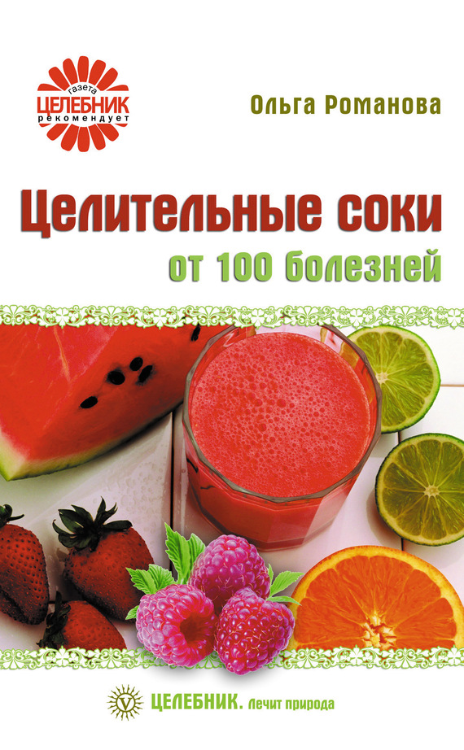

Соки против рака

Что мы знаем о раке
Многие думают, что рак неизлечим, и если поставлен этот страшный диагноз, то не поможет ни химиотерапия, ни лучевая терапия, ни операция. Однако рак можно победить! Как и любое другое заболевание, рак имеет свои причины, и если эти причины будут найдены и устранены, то болезнь отступит.
Существует два вида опухолей – доброкачественные и злокачественные. Клетки злокачественной опухоли стремятся быстро разрастись, захватывая все новые и новые соединения клеток (метастазы). В результате поражается все больше и больше органов.
Современная медицина считает, что если удается распознать рак на начальной стадии, когда опухоль еще не «пустила» метастазы, то вероятность излечения очень высока. Однако на ранней стадии заболевание может протекать без симптомов: опухоль не дает о себе знать и больной не обращается к врачу. Обычно больные идут к врачу лишь тогда, когда начинаются боли, а шансы на излечение на этой стадии очень и очень низкие.
Сейчас медики предлагают для лечения рака три основных метода: химиотерапию, лучевую терапию и операцию. Иногда эти три метода комбинируют. Однако все они лишь создают видимость излечения. Ведь когда не устранены причины появления опухоли, не помогает даже операция: через какой-то период времени рак дает о себе знать. Кроме того, методы лечения, которые использует современная медицина, настолько подрывают жизненные силы организма, что о полном излечении вряд ли может идти речь.
Сокотерапия при раковых заболеваниях
Современная наука не пришла к единому мнению о причинах возникновения рака. Существует несколько теорий, начиная от вирусной природы рака и заканчивая генетическими мутациями. Однако с уверенностью можно говорить о том, что возникновение злокачественных опухолей тесно связано с питанием и образом жизни человека. Так, раковые клетки могут появиться только в организме, в котором:
• существует недостаток кислорода и, как следствие этого, происходит накопление окиси углерода;
• существует недостаток аскорбиновой кислоты, витамина E, магния, калия;
• существует загрязнение шлаками и другими токсичными веществами.
Именно поэтому для профилактики и лечения раковых заболеваний очень важно соблюдать правила питания. Для этого нужно знать, какие фрукты и овощи препятствуют возникновению и развитию опухолей.
1. Противоопухолевым действием обладают:
– фруктовые соки: из авокадо, киви, грейпфрута, клубники, апельсина, малины, арбуза;
– овощные соки: из всех видов капусты, баклажанов, редиса, репы, тыквы, помидоров, болгарского перца, чеснока, петрушки, лука, имбиря.
2. Блокируют метастазы соки всех видов капусты, сок чеснока, соки всех видов желтых и зеленых овощей.
3. Для профилактики и лечения лейкемии следует использовать соки свеклы, моркови, огурца, можно в смеси. Эти соки должны быть на вашем столе ежедневно.
4. Образованию и развитию рака кишечника препятствуют соки белокочанной капусты, брокколи, цветной капусты, а также соки всех овощей и фруктов желтого и зеленого цвета.
5. Образованию и развитию рака молочной железы препятствуют соки капусты всех видов, а также соки всех овощей зеленого цвета.
Народные средства при раке
1. Возьмите майский мед – 600 г, сок алоэ – 350 мл (до срезания растение не следует поливать 9 дней), крепкое красное вино. Смешайте сок с медом и вином. Принимайте первые 5 дней 3 раза в день по 1 ч. ложке, а в последующие дни 3 раза в день по 1 ст. ложке за час до еды. Курс лечения – от 3 недель до 1,5 месяца.
2. Сок шиповника смешайте с соком черной смородины в пропорции 1:1. Принимайте по 1/4 стакана 3–4 раза в день.
3. Сок шиповника смешайте с соком рябины в пропорции 1:1. Принимайте по 1/4 стакана 3 раза в день.
4. Сок шиповника смешайте с соком калины в пропорции 1:1. Принимайте по 1/4 стакана 3 раза в день в течение 2 недель.
5. Сок шиповника смешайте с соком брусники в пропорции 1:1. Принимайте по 1/4 стакана 3 раза в день в течение 2 недель.
6. Сок крапивы смешайте с соком рябины в пропорции 3:7. Принимайте по 1/4 стакана 3 раза в день в течение 2 недель.
7. Необходимо выпивать в день не менее 2–3 стаканов апельсинового сока.
8. Полезно пить сок сырого картофеля.
9. 500 мл смеси морковного, огуречного, свекольного и картофельного соков бывают весьма эффективным средством при полном исключении из рациона мяса, полуфабрикатов и продуктов быстрого приготовления.
10. Сок моркови, репы и майского одуванчика в качестве противоракового средства следует принимать по 1/2-1 стакану 3 раза в день в течение 2 месяцев.